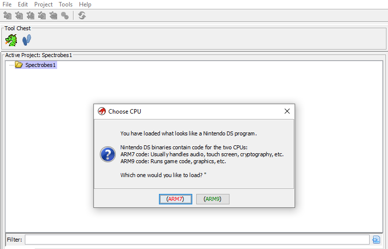
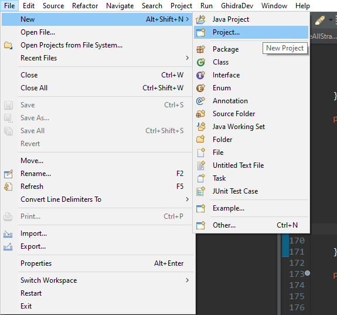
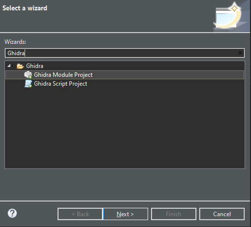
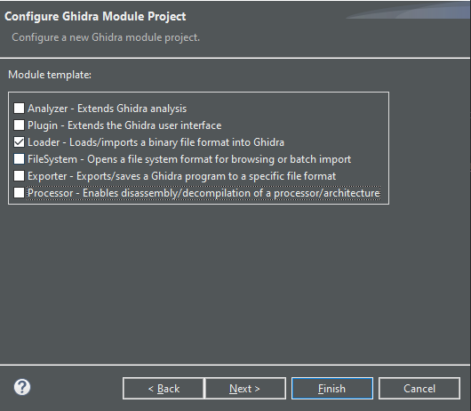
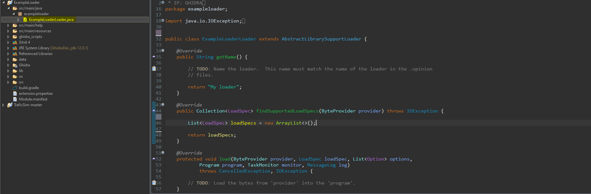
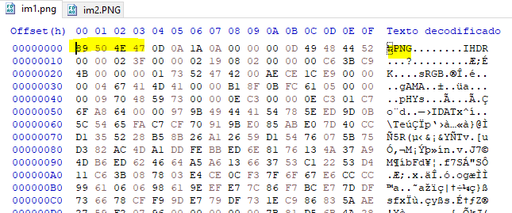

Tutorial: Escribir un loader para Ghidra
Introducción
¡Todos a bordo del tren del reversing! Abril de 2020 y el mundo entero parece haberse detenido debido al covid-19. Yo mismo me encuentro en cuarentena estos días, lo cual dentro de lo malo es una buena oportunidad para seguir aprendiendo. Llevo un tiempo dedicando mi esfuerzo en mejorar mi conocimiento de herramientas libres de ingeniería inversa (reversing) y dejar a un lado el software de pago, asi que decidí que sería una idea excelente aprender más sobre Ghidra y su funcionamiento. En especial tenía ganas de programar un loader para un formato no soportado.

¿Qué es un loader?
Un loader o cargador, y el concepto se aplica a la mayoría de herramientas de reversing, es una extensión de código que como su nombre indica permite cargar (load) tipos de archivos específicos. Es decir, el código entiende el formato del archivo. Ghidra está escrito en Java y también lo estará nuestra extensión.
¿Qué no es un loader?
Un loader o cargador se encarga exclusivamente de entender la estructura del archivo, trocearlo, y tratarlo de forma que Ghidra lo entienda. Por lo tanto, un cargador no añade soporte para nuevas arquitecturas, lenguajes o procesadores. Sin embargo, si instruye a Ghidra para que utilize el desensamblador adecuado para el código contenido en el archivo, por ejemplo.
Entorno de desarrollo
Tener Ghidra instalado es el primer requisito. Eclipse es el IDE o entorno preferido y tiene soporte oficial por parte de Ghidra. Descargaremos la última versión desde aquí y lo instalaremos.
En segundo lugar, hay que instalar la extensión de Ghidra para Eclipse. Para ello, abriremos Eclipse, haremos click en Help/Ayuda, después en Install New Software/Instalar Nuevo Software, encontraremos el botón Add/Añadir y seleccionaremos el archivo GhidraDev.zip que deberíamos poder encontrar en el directorio /Extensions/Eclipse/GhidraDev/ en la carpeta de instalación de Ghidra. Reiniciamos Eclipse y estamos listos para crear un nuevo proyecto.
Configurar un proyecto
La extensión GhidraDev nos provee con plantillas y ejemplos de código para todo tipo de extensiones como cargadores(loaders), analizadores(analyzers), etc.

Creamos un nuevo proyecto y seleccionamos “Ghidra Modula Project” como el tipo de proyecto.

A continuación, seremos preguntados sobre el nombre del proyecto. Seguido, podemos escoger que tipo de extensión queremos crear, podemos seleccionar más de una, y se crearán plantillas automáticamente, en este caso seleccionaremos exclusivamente Loader.

Hacemos click en next/siguiente y finalmente seremos preguntados por la ruta donde tenemos nuestra instalación de Ghidra.
Estructura del proyecto de cargador

Eclipse habrá creado un archivo .java con el nombre de nuestro cargador(ExampleLoaderLoader.java en este ejemplo) con algunos métodos básicos que debemos implementar. Veamos para que sirven.
public String getName(): Devuelve el nombre de nuestro loader. Simplemente reemplazamos la string con una que describa el tipo de archivo que queremos cargar, y adicionalmente, la extensión más común de ese tipo de archivos.
public Collection<LoadSpec> findSupportedLoadSpecs(ByteProvider provider): Comprueba si el archivo introducido puede ser cargado por esta extensión.
protected void load(ByteProvider provider, LoadSpec loadSpec, List<Option> options, Program program, TaskMonitor monitor, MessageLog log): Si el archivo era válido, este método trabajará con el, lo leerá, lo tratará si es necesario, y configurará la database de Ghidra de forma acorde.
No necesitamos implementar más métodos.
Un caso práctico
Hasta ahora hemos visto los detalles genéricos de un loader, pero lo que habrá que hacer a continuación depende del tipo de archivo que queramos cargar. En mi caso, estoy desarrollando NTRGhidra, un cargador para archivos de Nintendo DS (NTR). La última versión del código puede encontrarse en github.
Después de leer el código de numerosos cargadores de Ghidra de código público, llegué a la conclusión de que existen numerosas metodologías y modelos a la hora de programar una extensión de este tipo asi que veamos de que forma se puede hacer.
1. findSupportedLoadSpecs
En este método tenemos que comprobar si el archivo corresponde al tipo que nuestro cargador es capaz de entender. La forma más común de hacer esto consiste en comprobar si existe alguna constante (normalmente llamada magic number) en el archivo que confirme su tipo. Veamos un ejemplo genérico, archivos PNG:

Estos archivos siempre tienen o deberáin tener los primeros 4 bytes de esta forma. A la hora de tratar con nuestro nuevo tipo de archivo, debemos encontrar alguna constante o firma similar, que nos permita identificar el archivo. Comprobando la estructura de la cabecera de un archivo de Nintendo DS podemos observar la siguiente entrada:
Addr Size Description
15Ch 2 Nintendo Logo Checksum, CRC-16 of [0C0h-15Bh], fixed CF56h
El valor 0xCF56 (2 bytes) debería aparecer siempre en la dirección 0x15C del archivo, y dado que es un checksum del logo de Nintendo, que es constante, el checksum también es constante. Veamos como implementar lo descubierto hasta ahora:
@Override
public Collection<LoadSpec> findSupportedLoadSpecs(ByteProvider provider) throws IOException {
// In this callback loader should decide whether it able to process the file and return instance of the class LoadSpec, telling user how file can be processed*/
//Create a binary reader
BinaryReader reader = new BinaryReader(provider, true);
boolean targetCPU;
//Read the magic number from the file
if ((reader.readInt(0x15C) & 0x0000FFFF) == (0xCF56))
{
//Nintendo DS has two CPUs. Ask the user which code he/she wants to work with, the ARM7 one or the ARM9 one.
targetCPU = promptToAskCPU();
//Setup Ghidra with the chosen CPU.
if(targetCPU)
return List.of(new LoadSpec(this, 0, new LanguageCompilerSpecPair("ARM32:v4t", "default"), true));
else
return List.of(new LoadSpec(this, 0, new LanguageCompilerSpecPair("ARM32:v5t", "default"), true));
}
return new ArrayList<>();
}Como se puede observar, se intenta leer la dirección 0x15C y comprobar si la constante coincide. Si esto falla, el método devuelve una ArrayList vacía, lo que significa que nuestro cargador no sabe como interpretar el susodicho archivo.
Por el contrario, si el archivo es válido, el cargador llama a un método que pregunta al usuario que parte del archivo quiere cargar. Esto se debe a que los archivos .nds contienen 2 binarios de diferentes versiones de la arquitectura ARM, uno del procesador ARM7TDMI que utiliza la arquitectura ARMv4t y el otro de un procesador ARM9 que utiliza la arquitectura ARMv5t.
Cómo encontrar la combinación exacta que pasar a LoadSpec es sencillo. Todas las soportadas se encuentran en el archivo Ghidra/Processors/ARM/data/languages/ARM.opinion.
¿Qué representa cada parte de la cadena ARM:LE:32:v4t? ARM especifica que se trata de un procesador ARM. LE significa Little Endian. 32 representa un procesador de x32 bits. Y v4t se trata de la versión de la arquitectura del ARM.
promptToAskCPU es simplemente un método que crea una ventana y pregunta al usuario que parte del archivo quiere cargar. El código se encuentra en github. Si el archivo a cargar solo contiene código para una sola arquitectura o CPU podemos devolver un solo LoadSpec : return new LoadSpec(...) con esa arquitectura, sin preguntar al usuario.
2. load()
El método load es tal vez el más importante de un cargador. Se encarga de entender nuestro nuevo tipo de archivo. Hay varias formas de programarlo
La primera de ellas es crear una clase de la forma {nombreDelFormato}Cabecera que se encargue de parsear la cabecera del archivo (si existe) y que devuelva las direcciones de los segmentos en los que se divide el archivo. Alternativamente, si el formato es sencillo o los segmentos siempre se encuentran en las mismas direcciones en el hardware real (como en el caso de Nintendo DS) podemos sencillamente programar lo que necesitemos dentro del método load.
Antes de proseguir considero importante explicar una pequeña cantidad de teoría sobre Ghidra. Esta dispone de dos APIs que pueden usarse para programar extensiones: la api “completa” con la que podemos hacer prácticamente cualquier cosa. Estos métodos pueden cambiar de versión en versión. Y la API flat, la cual en teoría no cambia entre versiones, pero tiene capacidades limitadas. He utilizado ambas en NTRGhidra.
@Override
protected void load(ByteProvider provider, LoadSpec loadSpec, List<Option> options,Program program, TaskMonitor monitor, MessageLog log) throws CancelledException, IOException{
BinaryReader reader = new BinaryReader(provider, true);
FlatProgramAPI api = new FlatProgramAPI(program, monitor);
Memory mem = program.getMemory();
...Empezemos por el principio. El argumento provider es un objeto que nos permite leer bytes de nuestro archivo. Lo envolveremos en un objeto del tipo BinaryReader para mayor facilidad. Después, creamos un objeto para utilizar la Flat API, y finalmente, obtenemos una referencia a la memoria (también llamada database) del proyecto actual.
Y podemos proceder a crear los segmentos de memoria y a llenarlos de datos:
if(!chosenCPU) //ARM9
{
monitor.setMessage("Loading Nintendo DS ARM9 binary...");
//Read the important values from the header. Can be implemented in a separate class.
int arm9_file_offset = reader.readInt(0x020);
int arm9_entrypoint = reader.readInt(0x024);
int arm9_ram_base = reader.readInt(0x028);
int arm9_size = reader.readInt(0x02C);
// Main RAM block: has to be created without the Flat API.
ghidra.program.model.address.Address addr = program.getAddressFactory().getDefaultAddressSpace().getAddress(arm9_ram_base);
MemoryBlock block = program.getMemory().createInitializedBlock("ARM9 Main Memory", addr, arm9_size, (byte)0x00, monitor, false);
//Set properties
block.setRead(true);
block.setWrite(false);
block.setExecute(true);
//read arm9 blob
byte romBytes[] = provider.readBytes(arm9_file_offset, arm9_size);
//Fill the main memory segment with the data from the binary directly
mem.setBytes(api.toAddr(arm9_ram_base), romBytes);
// Empty Memory segments. Can be created with the Flat API.
api.createMemoryBlock("Shared WRAM", api.toAddr(0x03000000), null, 0x01000000, true);
api.createMemoryBlock("ARM9 I/O Ports", api.toAddr(0x04000000), null, 0x01000000, true);
api.createMemoryBlock("Standard Palettes", api.toAddr(0x05000000), null, 0x01000000, true);
api.createMemoryBlock("VRAM - Engine A BG VRAM", api.toAddr(0x06000000), null, 0x00200000, true);
api.createMemoryBlock("VRAM - Engine B BG VRAM", api.toAddr(0x06200000), null, 0x00200000, true);
api.createMemoryBlock("VRAM - Engine A OBJ VRAM", api.toAddr(0x06400000), null, 0x00200000, true);
api.createMemoryBlock("VRAM - Engine B OBJ VRAM", api.toAddr(0x06600000), null, 0x00200000, true);
api.createMemoryBlock("VRAM - LCDC", api.toAddr(0x06800000), null, 0x00200000, true);
//Set entrypoint
api.addEntryPoint(api.toAddr(arm9_entrypoint));
api.disassemble(api.toAddr(arm9_entrypoint));
api.createFunction(api.toAddr(arm9_entrypoint), "_entry_arm9");
}En el ejemplo de arriba, el cargador lee y trata el binario del procesador ARM9. El segmento más importante es el que se llena con datos desde el archivo, y hay que crearlo con el método createInitializedBlock() (api “completa”) si no, obtendremos una excepción al llenarlo más adelante con el método setBytes(). Los segmentos restantes están vacíos. Su dirección de memoria y su tamaño son constantes y están hardcodeados en el código (aunque cuando haya implementado otras características extra que son importantes tal vez limpie un poco más este código). De cualquier manera, esto es correcto ya que en el hardware real estas direcciones nunca cambian.
A futuro
Espero que este nuevo tutorial contribuya a tener más contenido sobre Ghidra y ejemplos en la web. Para cualquier sugerencia o corrección, deja un comentario al final de la entrada!
Referencias
No es posible tener una guía todo en uno sobre reversing ni sobre Ghidra, por ello, a continuación encontrarás una lista con más recursos, código y tutoriales sobre cargadores para Ghidra. Los he utilizado como referencia (aviso: se encuentran en inglés):
Ejemplos de código en github:
Para concluir, gracias a to @lab313ru, Gericom, y ChampionLeake.